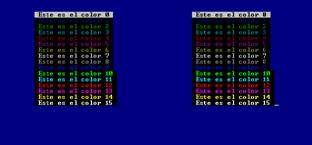

La familia Turbo C / Turbo C++ / Borland C++ incluye una serie de compiladores creados por Borland para Dos y para Windows. Con ellos se podía utilizar ciertas órdenes para escribir en cualquier posición de la pantalla, para usar colores, para comprobar qué tecla se había pulsado, etc. Eso sí, estas órdenes no son C estándar, así que lo más habitual es que no se encuentren disponibles para otros o para otros sistemas operativos.
Aun así, como primer acercamiento al control de estos dispositivos desde Linux, puede ser interesante conocer lo que ofrecía la familia de Turbo C y posteriores, porque sientan muchas de las bases que después utilizaremos, pero a la vez se trata de funciones muy sencillas.
Comencemos por las más habituales en cuanto a manejo de pantalla:
Por lo que respecta al teclado, tenemos
Todas ellas se encuentran definidas en el fichero de cabecera “conio.h”, que deberemos incluir en nuestro programa.
Los colores de la pantalla se indican por números. Por ejemplo: 0 es el negro, 1 es el azul oscuro, 2 el verde, 3 el azul claro, 4 el rojo, etc. Aun así, para no tener que recordarlos, tenemos definidas constantes con su nombre en inglés:
BLACK, BLUE, GREEN, CYAN, RED, MAGENTA, BROWN, LIGHTGRAY, DARKGRAY,
LIGHTBLUE, LIGHTGREEN, LIGHTCYAN, LIGHTRED, LIGHTMAGENTA, YELLOW, WHITE.
Pero hay que tener una precaución: en MsDos sólo se pueden usar como colores de fondo los 7 primeros: desde BLACK hasta LIGHTGRAY. Se podía evitar en los ordenadores más modernos, a cambio de perder la posibilidad de que el texto parpadee, pero es un detalle en el que no entraremos. El caso es que "normalmente" si hacemos algo como
textbackground(LIGHTBLUE);
no obtendremos los resultados esperados, sino que será como si hubiésemos utilizado el color equivalente en el rango de 0 a 7:
textbackground(BLUE);
Para usarlas, tenemos que incluir “conio.h”. Vamos a ver un ejemplo que emplee la mayoría de ellas:
/*---------------------------*/
/* Ejemplo en C nº 89: */
/* C089.C */
/* */
/* Pantalla y teclado */
/* con Turbo C */
/* */
/* Curso de C, */
/* Nacho Cabanes */
/*---------------------------*/
#include /* Para funciones de pantalla */
int main()
{
int i,j; /* Para los bucles "for" */
textbackground(BLUE); /* Fondo de la pantalla en azul */
clrscr(); /* Borro la pantalla */
for(i=0; i<=1; i++) /* Dos columnas */
for(j=0; j<=15; j++) /* Los 16 colores */
{
gotoxy(10+ 40*i , 3+j); /* Coloco el cursor */
textcolor(j); /* Elijo el color */
if (j == 0) /* Si el color es 0 (negro) */
textbackground(LIGHTGRAY); /* dejo fondo gris */
else /* Si es otro color */
textbackground(BLACK); /* dejo fondo negro */
cprintf(" Este es el color %d ",j); /* Escribo en color */
}
getch(); /* Final: espero que se pulse una tecla, sin mostrarla */
return 0;
}
El resultado sería éste:

Tenemos más funciones definidas en “conio.h”, que nos permiten saber en qué posición de la pantalla estamos, definir “ventanas” para trabajar sólo con una zona de la pantalla, etc. Pero como el trabajo en modo texto se considera cada vez más anticuado, y especialmente dentro del entorno Windows, no profundizaremos más.